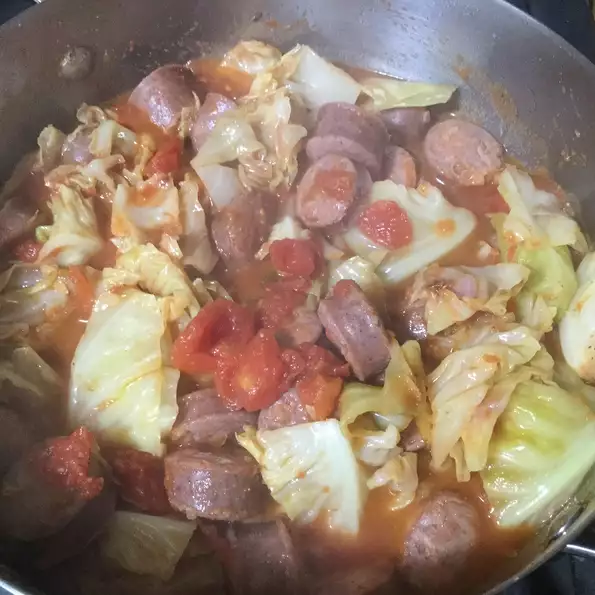

The best Meal
My mother often served a delicious Polish dish made with cabbage.
We always topped ours with a dollop of sour cream and sometimes served this over mashed potatoes.
You can make this just using the cabbage, but I add kielbasa or smoked turkey for additional flavour. Delicious.
Ingredients
- 2 tablespoons olive oil
- 2 onions, chopped
- 1 clove garlic, or more to taste, minced
- 1 medium head cabbage, cut into squares
- 1 teaspoon white vinegar
- 1 teaspoon caraway seeds
- 1 teaspoon white sugar
- 1 pound kielbasa sausage, cut into chunks
- 1 (14.5 ounce) can stewed tomatoes (with garlic and olive oil)
- ¼ cup salsa
- salt and ground black pepper to taste
Directions
- Heat olive oil in a Dutch oven over medium heat. Cook and stir onions and garlic in hot oil until onion is translucent, 3 to 5 minutes.
- Stir cabbage, vinegar, caraway seeds, and sugar with the onion mixture; bring to a simmer and cook until the cabbage is softened, about 15 minutes.
- Stir sausage, tomatoes, and salsa with the cabbage mixture; season with salt and pepper. Place a cover on the Dutch oven and cook until cabbage is completely tender, 45 to 60 minutes.
Return to top
Return to main page